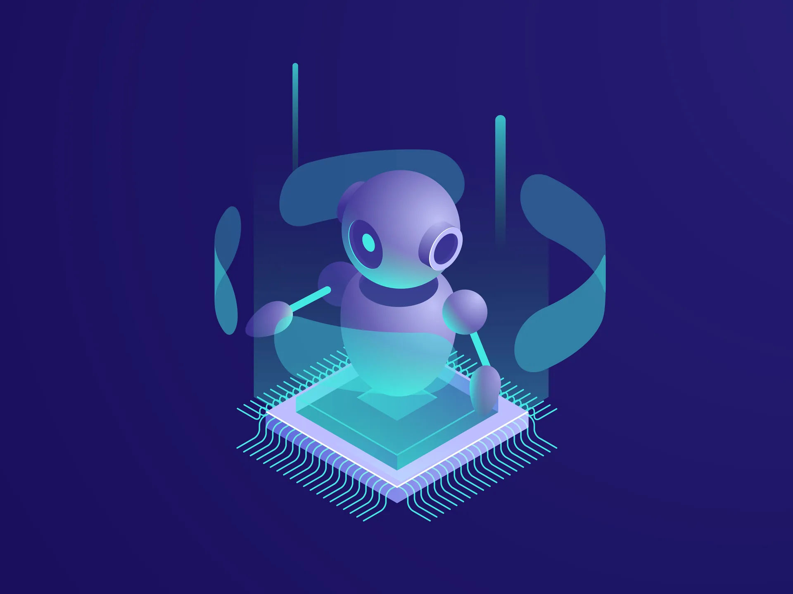
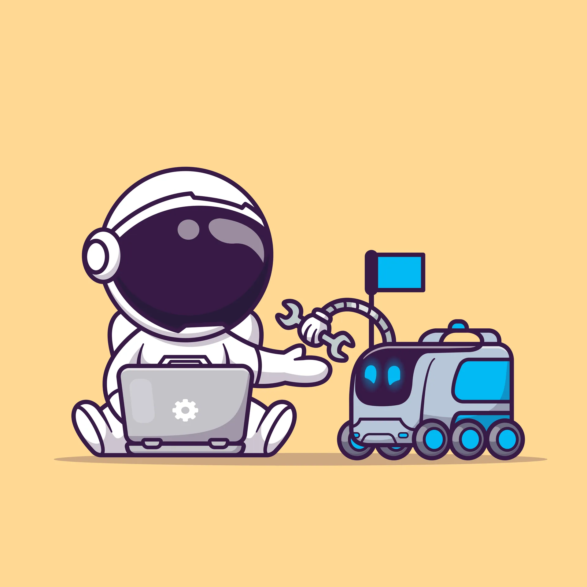
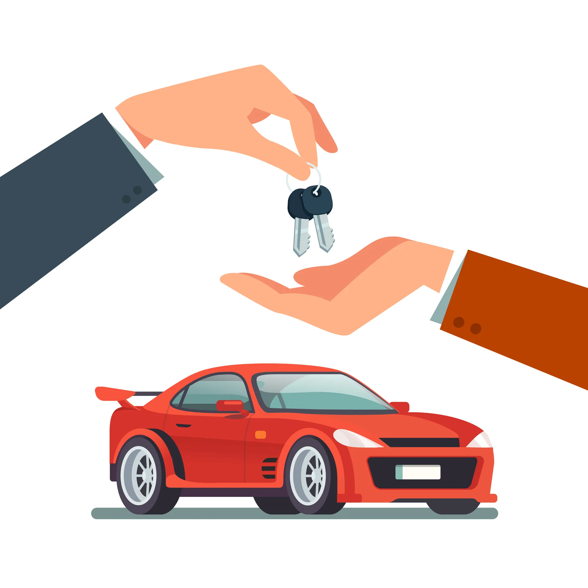
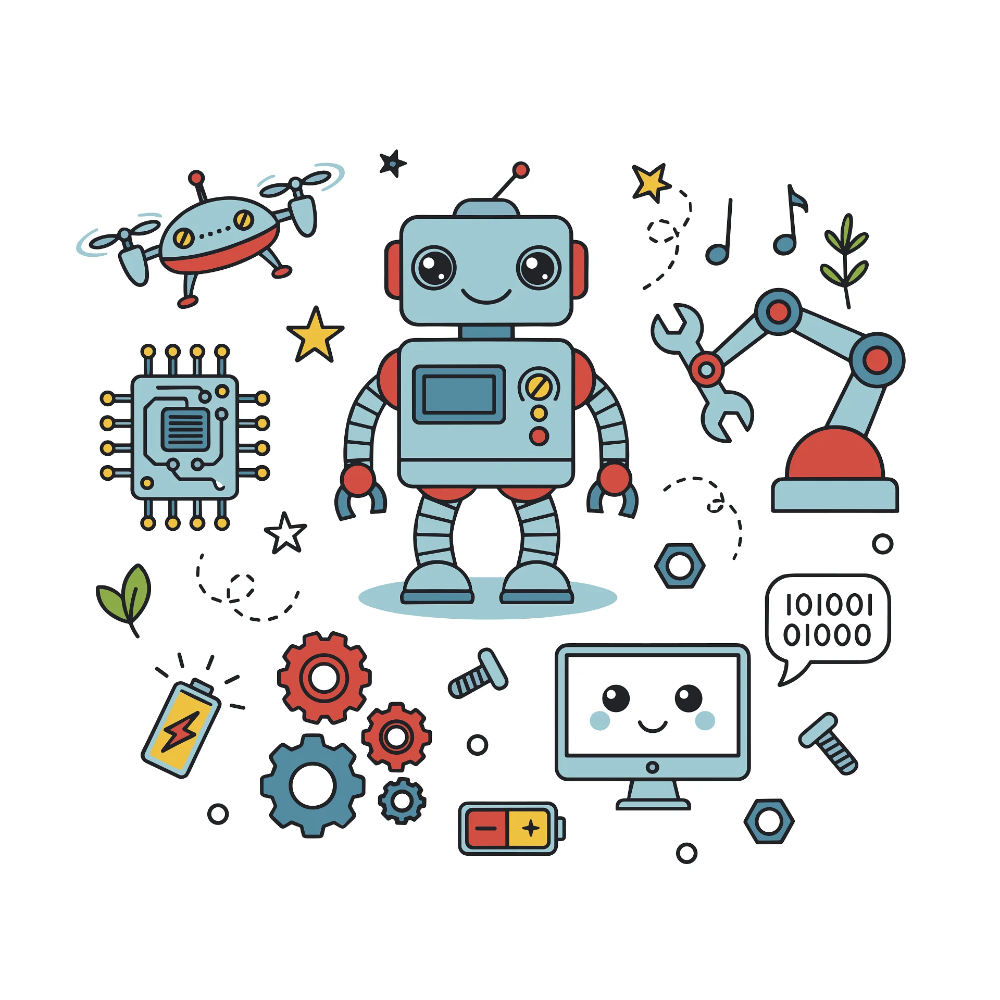

Tekoäly ilman tietovuotoja: Näin valjastat kielimallit yrityksesi omalla datalla
Monessa yrityksessä pelätään tietovuotoja tekoälyä käytettäessä. Lue miten rakennat suojatun ympäristön ja hyödynnät kielimalleja yrityksesi omalla datalla.
Oppaita ja artikkeleita automaatiosta, tekoälystä ja PK-yritysten digitaalisesta kasvusta.
Laske tekoälyn ja automaation tuoma hyöty suoraan yrityksellesi.
Monessa yrityksessä pelätään tietovuotoja tekoälyä käytettäessä. Lue miten rakennat suojatun ympäristön ja hyödynnät kielimalleja yrityksesi omalla datalla.

Suomalainen PK-yritys voi saada oman, turvallisen ja yrityksen omaan dataan pohjautuvan tekoälyn käyttöönsä budjetilla, joka maksaa itsensä heti takaisin.
Unohda hallusinoivat chatbotit. Dedikoitu tekoäly ja RAG-tekniikka kytkevät kielimallin yrityksesi omaan dataan turvallisesti.

AI-strategia on lukuisten suomalaisten organisaatioiden keskiössä vuonna 2026. Lue miksi tekoälytulisi ottaa hallitusti käyttöön.
Mistä automaation hyödyntäminen kannattaa aloittaa? Lue kolme helppoa ja aikaa säästävää perusprosessia.

Opas PK-yrittäjälle: Mitä eroa on tekoälyagenteilla ja perinteisellä automaatiolla, ja miten valita oikea työkalu?

Tekoäly on tehokas moottori, mutta ilman kytkentöjä se ei siirrä yritystäsi paikaltaan. Lue miksi integraatiot ovat avain tuloksiin.

Tutustu siihen, miten Retrieval-Augmented Generation (RAG) mahdollistaa tekoälyn, joka ymmärtää yrityksesi omat tiedostot ja varmentaa faktoissa pysymisen.
PK-yrityksen arki tehostuu, kun rutiinit siirretään koneen huoleksi. Lue kolme käytännön esimerkkiä ajan säästämisestä.
Miten suomalainen PK-yritys säästää aikaa ja rahaa valjastamalla älykkään automaation prosessiensa tueksi?